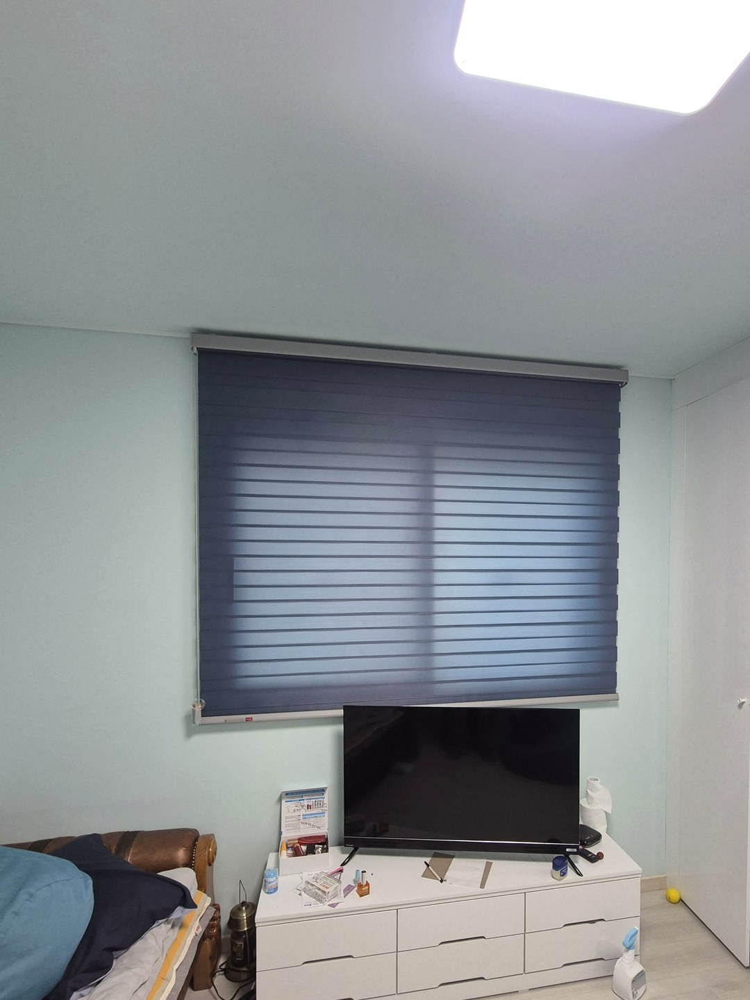
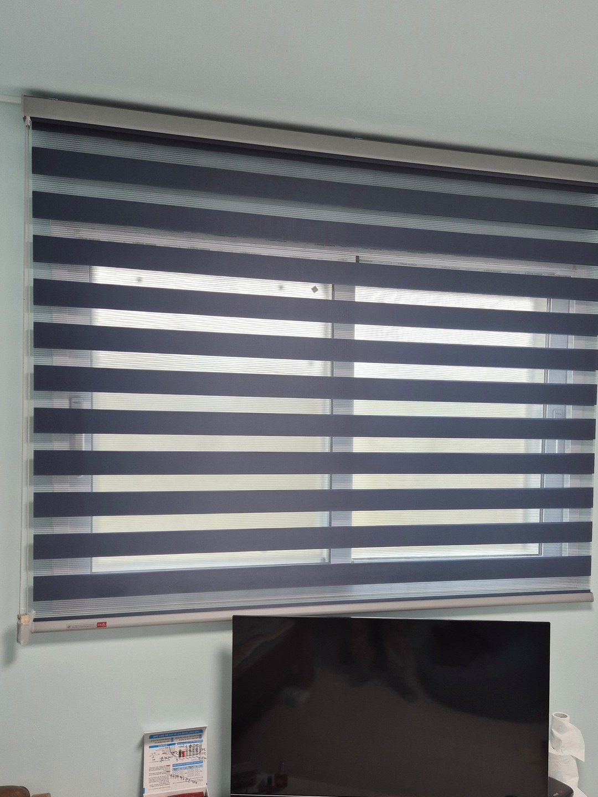
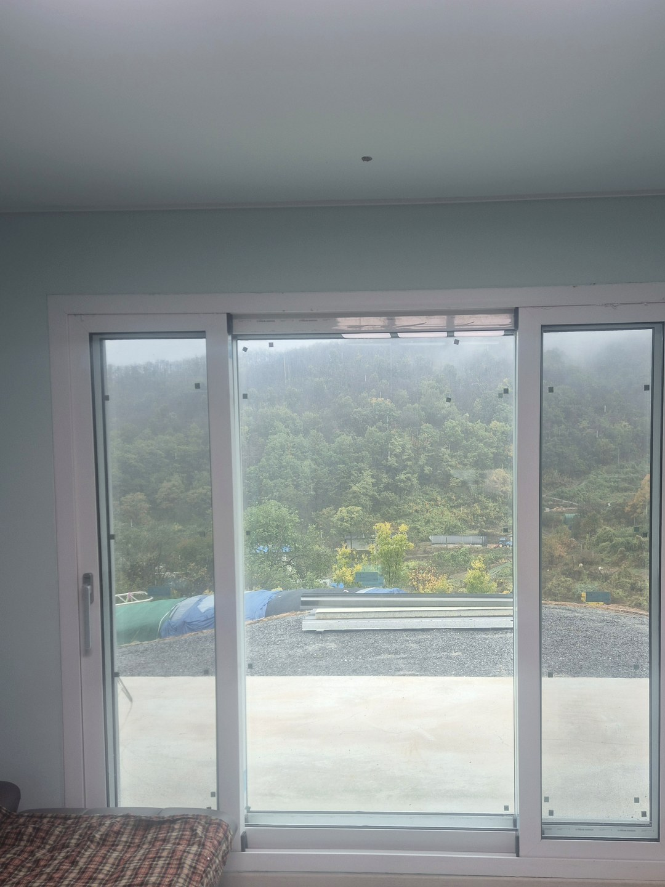
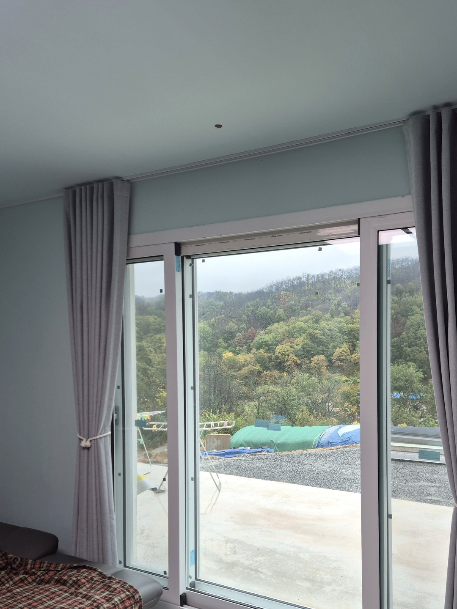
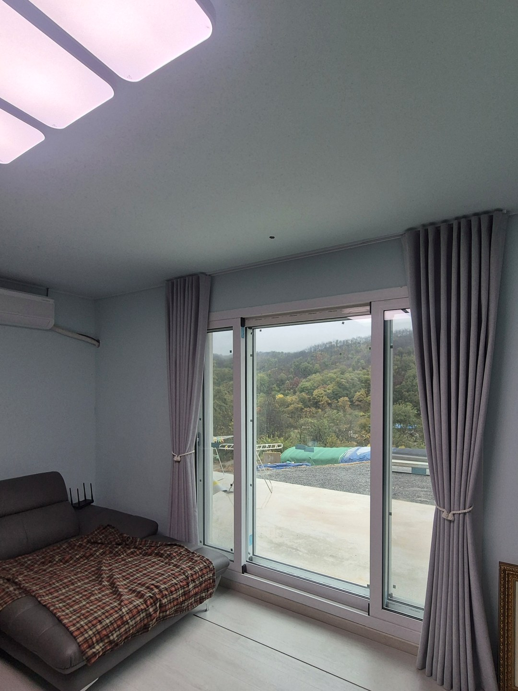
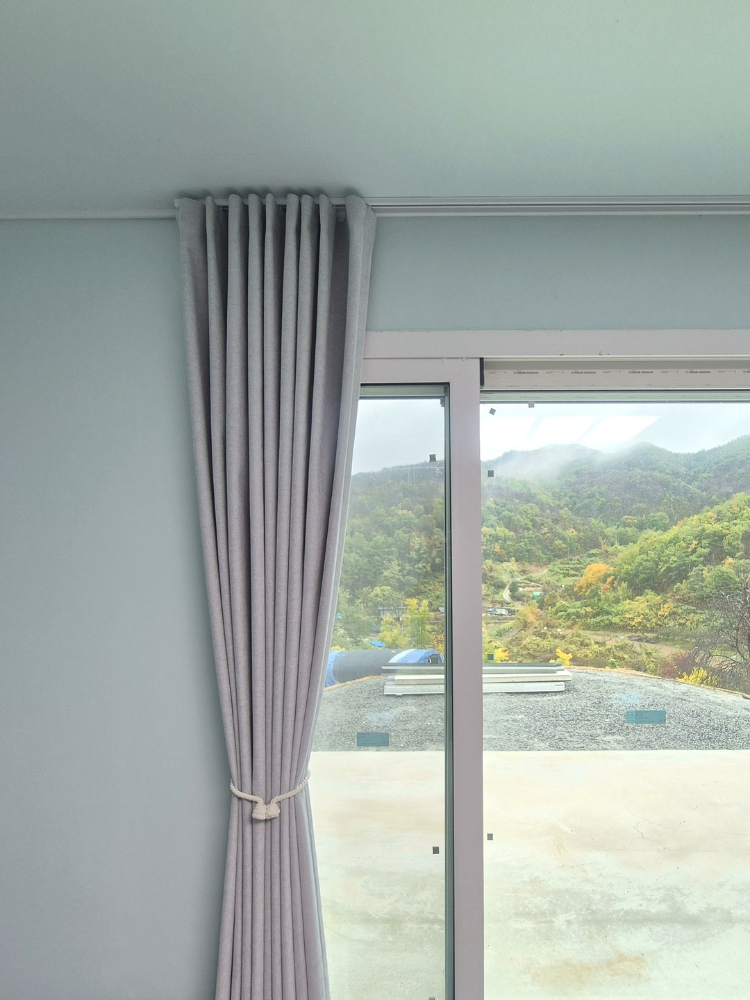

2026년 10월 13일 시공
의성 신평면 신축주택
콤비블라인드·암막커튼 시공후기

시공 장소는 경북 의성군 신평면의 단독주택입니다.
화재로 피해를 입은 옛 집을 철거하고 같은 자리에 새로 지은 집으로, 연세 드신 부모님이 거주하십니다.
의뢰는 다른 지역에 사시는 자녀분이 전화로 해 주셨고, 저희가 원단 샘플을 가지고 방문해 실측과 상담, 설치까지 진행했습니다.
안방 — 남색 콤비블라인드
안방 창은 TV 장 바로 위에 있어, 옆으로 펼치는 커튼 대신 위아래로 조작하는 콤비블라인드를 골랐습니다.
원단이 TV 앞으로 내려오지 않아 가구 배치를 바꿀 필요가 없습니다.
색은 옅은 하늘색 벽과 대비되는 남색 계열입니다.

조작줄 하나로 원단 띠와 망사 띠의 겹침을 바꿔 채광을 조절합니다.
제품 전체를 올리지 않아도 밝기를 바꿀 수 있어, 어르신이 쓰시기에 동작이 단순한 편입니다.
거실 — 그레이 암막커튼


거실은 바닥까지 내려오는 큰 미닫이창이고, 창밖으로 옥상 마당과 산이 바로 이어집니다.
주변에 볕을 가려 줄 건물이 없어 원단은 암막으로 정했고, 길이는 바닥에 거의 닿도록 맞췄습니다.
양쪽에 묶음끈을 달아 낮에는 커튼을 모아 두고 바깥 경치를 볼 수 있습니다.


설치 후 알아 두실 점
콤비블라인드는 원단끼리 완전히 겹쳐 닫아도 빛이 조금 남습니다. 새벽 빛에 민감하시면 암막 원단을 선택하시거나 커튼을 함께 다는 방법을 검토하셔야 합니다.
암막커튼 역시 양옆과 상단 틈으로는 빛이 일부 들어옵니다.
멀리 계신 가족이 의뢰하실 때
부모님 댁 커튼을 자녀분이 대신 맡기시는 경우, 먼저 창 전체가 나오는 사진으로 대략적인 범위를 상의합니다.
원단 색과 질감은 실제 거주하실 분이 샘플을 직접 만져 보고 고르시도록 방문 일정을 잡습니다.
신축 주택은 창호 설치가 끝난 뒤 실측해야 치수가 정확합니다.